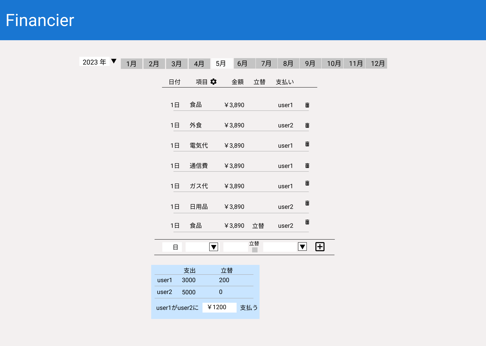

支出情報操作画面¶
画面機能要件
支出情報操作画面の要件について記す。
機能と配置¶
支出情報を年月単位で登録管理し、精算額を算出して表示する。
表示する情報の年を選択するプルダウンメニュー「年選択ドロップダウン」を上部左側に配置する。
「年選択ドロップダウン」の右側に1～12月の表示を切り替える「月選択ボタン」を配置する。
「月選択ボタン」の下部に「支出情報テーブル」を配置する。
「支出情報テーブル」のヘッダー(日付/項目/金額/立替/支払い)は登録情報0件の場合でも表示する。
「支出情報テーブル」のヘッダーの「項目」の横に歯車アイコンの「支出項目設定ボタン」を配置する。
「支出情報テーブル」のヘッダーの下部に登録された情報を表示する。(登録情報0件の場合は表示なし)
登録された情報の右側にゴミ箱アイコンの「支出情報削除ボタン」を配置する。
「支出情報テーブル」の下部に登録情報(日付/項目/金額/立替/支払い)を入力するための「支出情報登録フォーム」を配置する。
「支出情報登録フォーム」の右側にプラス(＋)アイコンの「支出情報登録ボタン」を配置する。
「支出情報登録フォーム」の下部にユーザーごとの支出合計と立替合計、精算額を表示した「清算額表示」を配置する。
使用するAPI¶
expence [GET] [POST] [DELETE]
category [GET]
bookmember [GET]
デザイン¶

パーツごとの詳細仕様¶
年選択ドロップダウン
Figma英名...year_select
HTMLタグ...<select>
役割
閲覧中の情報の年を表示し、ほかの年を選択すると選択された年の情報に切り替わる。
仕様
画面遷移時は現在年を表示する。
選択可能な範囲はリリース予定の2023年から2100年まで。
アクション
ドロップダウンメニュー選択時、選択された年の1月の情報を取得し、「支出情報テーブル」を更新する。
使用するAPI: expence
[GET]
月選択ボタン
Figma英名...month_select_button
HTMLタグ...<button>
役割
閲覧中の情報の月を示し、ほかの月のボタンを押下すると表示情報が切り替わる。
仕様
1～12月のボタンを、その月の支出データの有無にかかわらず常に表示する。
選択中の月ボタンは、他の月ボタンと色を変えて区別する。
画面遷移時は現在の日付の月が選択される。
任意の月のボタン押下で、その月の表示に切り替える。
「年選択ドロップダウン」により表示年が変わった場合は、1月が自動的に選択される。
アクション
ボタン押下時、選択された月の情報を取得し、「支出情報テーブル」を更新する。
使用するAPI: expence
[GET]
支出情報テーブル
Figma英名...expence_table
HTMLタグ...<table>他
データ取得...expence [GET]
役割
登録された支出情報を月単位で表示する。
仕様
画面遷移時は、現在年・現在月の支出情報を表示する。
(「年選択ドロップダウン」、「月選択ボタン」と表示を合わせること)「年選択ドロップダウン」により新たに表示年が選択された場合は、選択年1月のデータを表示する。
(「年選択ドロップダウン」、「月選択ボタン」と表示を合わせること)表示項目は
[日/項目/金額/立替/購入者/1レコードを削除する支出情報削除ボタン]
ヘッダーの「項目」の右にある「支出項目設定ボタン」押下で、支出項目設定画面へ遷移する。
支出情報削除ボタン
Figma英名...delete_expence_button
HTMLタグ...<button>
データ削除...expence [DELETE]
役割
「支出情報テーブル」の1レコードのデータを削除する。
仕様
「支出情報テーブル」の一行に対応する削除ボタンを、それぞれの行の右横に設ける。
アクション
押下後、該当行の削除を行い、当月のデータを再度取得し、「支出情報テーブル」の表示を更新する。
支出情報登録フォーム
Figma英名...expence_form
HTMLタグ...<form>
役割
「支出情報テーブル」に表示される1レコードのデータを登録するためのフォーム。
以下のパーツで構成される日づけ選択ドロップダウン
Figma英名...date_select
HTMLタグ...<select>役割
「年選択ドロップダウン」、「月選択ボタン」で選択中の年月から入力可能な日数を判定し、入力値を制限する。
仕様
選択必須
支出項目選択ドロップダウン
Figma英名...category_select
HTMLタグ...<select>
データ取得...category [GET]役割
登録された支出項目を選択肢として表示する。
仕様
選択必須
金額入力ボックス
Figma英名...price_input
HTMLタグ...<input type="text">役割
支出額を入力する
仕様
入力必須
半角数値のみ受け付ける。
立替チェックボックス
Figma英名...reimbursement_check
HTMLタグ...<input type="checkbox">役割
チェックされた状態で、立替支出であることを示す。
仕様
入力は任意。
支払者選択ドロップダウン
Figma英名...payer_select
HTMLタグ...<select>
データ取得...bookmember [GET]役割
取得した帳簿メンバーをもとに、選択肢を表示する。
仕様
選択必須。
支出情報登録ボタン
Figma英名...expence_form_submit_button
HTMLタグ...<button>
データ登録...expence[POST]役割
「支出情報登録フォーム」に入力した内容を支出情報として登録する。
仕様
フォームの入力に誤りがない場合に押下可能となる。
アクション
押下後、入力内容をAPIの仕様に従って調整し、登録を行う。
清算額表示
Figma英名...payment_display_card
HTMLタグ...<table> <p>他
役割
精算情報を表示する
清算額の計算式は「PRD > 用語集・計算式」を参照。
下記の形式で表示する
ユーザーごとの支出合計と立替合計
次のようなフォーマットの支払い情報
「user1」が「user2」に「￥**,***」支払う
操作・CGI¶
ページ遷移
ユーザーがログイン後この「支出操作画面」へ遷移
サーバーに対し、以下のAPIでリクエストを行う
expence [GET]
API仕様に従い、現在年・現在月をクエリパラメータに指定するcategory [GET]
bookmember [GET]
正常応答時、2に対するレスポンスが返される
レスポンスデータをもとに次のパーツを描画
expence [GET]:
expence_tablecategory [GET]:
expence_form>category_selectbookmember [GET]:
expence_form>payer_select
支出情報登録フォーム送信
「支出情報登録ボタン」の押下
入力された支出情報をもとにexpence [POST]を使用し支出情報を登録する
正常終了時、後続の処理へ進む
expence [GET]を使用し、操作中の月の支出情報を取得
正常終了時、該当月の支出情報がレスポンスされる
取得情報をもとに「支出情報テーブル」を更新
支出情報削除
「支出情報テーブル」>「支出情報削除ボタン」の押下
該当データのリソースIDをもと、expence [DELETE]を使用し削除リクエストを行う
正常終了時、後続の処理へ進む
expence [GET]を使用し、操作中の月の支出情報を取得
正常終了時、該当月の支出情報がレスポンスされる
取得情報をもとに「支出情報テーブル」を更新
表示月移動
表示を移動したい月の「月選択ボタン」を押下
expence [GET]を使用し、選択された月の支出情報を取得
正常終了時、該当月の支出情報がレスポンスされる
取得情報をもとに「支出情報テーブル」を更新
表示年移動
表示を移動したい年の「年選択ドロップダウン」を押下
expence [GET]を使用し、選択された年の1月の支出情報を取得
正常終了時、該当年1月の支出情報がレスポンスされる
取得情報をもとに「支出情報テーブル」を更新